Recently I have completed my own version of Ben Eater video card. I still need to spend some time on it, since I could not achieve as good and sharp looking images as Ben did. For example the finch picture generated by my card does not look as crisp and clear as in Ben videos: 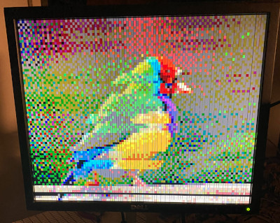
Anyway, here I want to show how you can create your own images and .bin files using Gimp and
a small Java program.
But first we need to find some nice images. After a bit of searching
I have found a Twitter account called @PixelStudioTeam full of retro looking images
that I decided to use. Thank you PixelStudioTeam!
OK let’s start by importing a palette file into Gimp.
Choose in the main menu: Windows -> Dockable Dialogs -> Palettes.
Then right click on the list of the palettes and choose Import…
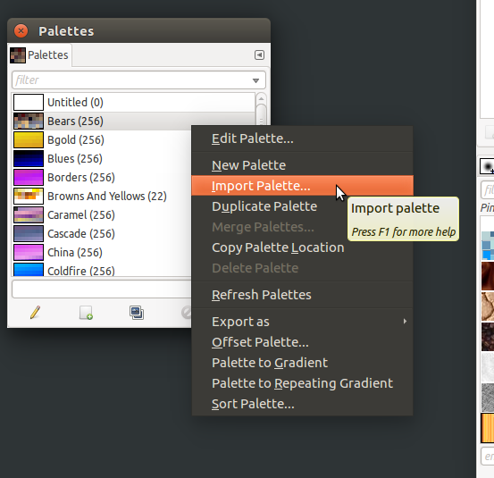
In the dialog that will appear, select Palette file as a source and
choose 64-color.act file that Ben publishes on his home page.
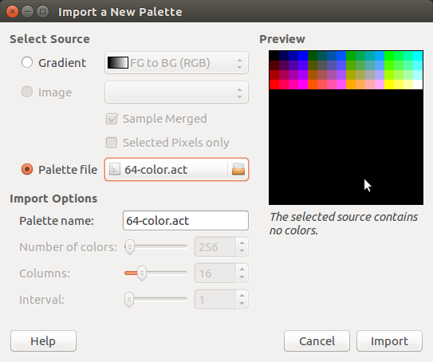
Click Import, after that a new palette with name 64-colors.act should appear on the list of the palettes.
Now we can prepare the images. First we must resize the images to 100px by 75px size required by Ben Eater video card. To do this we can use Image -> Scale image… and Image -> Set canvas size… menu options.
IMPORTANT: Before we proceed we must also remove transparency layer that some PNG files have. To do this please select Layer -> Transparency -> Remove alpha channel… If this option is grayed out then the image does not have alpha channel and we do not need to remove anything.
Now let’s convert our image to indexed mode, choose: Image -> Mode -> Indexed… 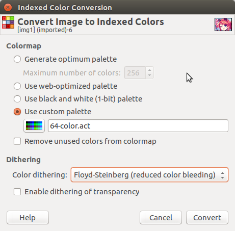 Choose Ben’s palette. Enabling dithering can result in a better looking images. After this step a colorful image should change appearance, if it looks the same try to switch modes again, first to RGB and then to Indexed.
The last step is to export our image to PNG format
(File -> Export As… -> Give a file name ending with .png and click Export):
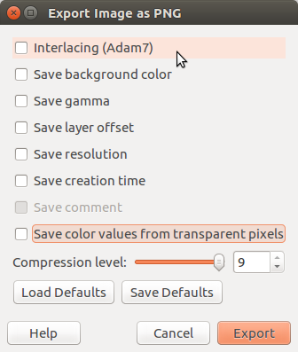
You should deselect all options. You can restore them later
by selecting Load Defaults button.
I prepared two small Java programs that you use to convert resulting .png images into .bin images.
You need to have Java JDK installed to compile and run them:
javac Converter.java
java Converter pic.png pic.binI also prepared a program that generates a set of patterns like chessboard for debugging purposes:
$ javac Stripes.java
$ java Stripes
use program output_file.bin [pallete|chess|rows|cols]
$ java Stripes chess.bin chessYou can find the four example images, the four example debugging patterns and the source code of Java programs here.
Let’s finish with the results that I achieved:
| 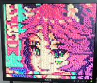 | 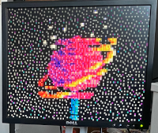 |
| 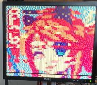 | 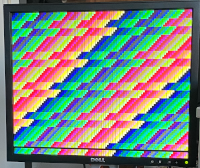 |
Of course the converted images look perfect, my card on the other hand introduces quite a lot of distortions…
UPDATE: I managed to find the source of distortions in my card. I mixed address lines 3 and 4 from VSync to EEPROM module. After swapping two wires I got a clear and crisp image:
| 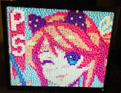 | 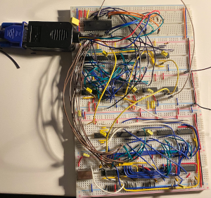 |